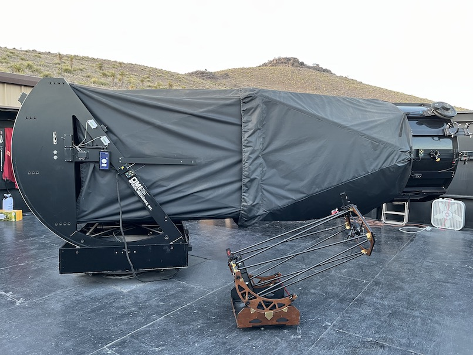
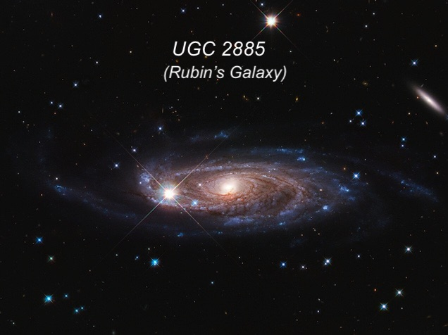
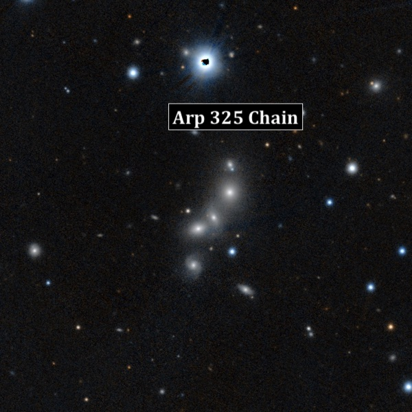
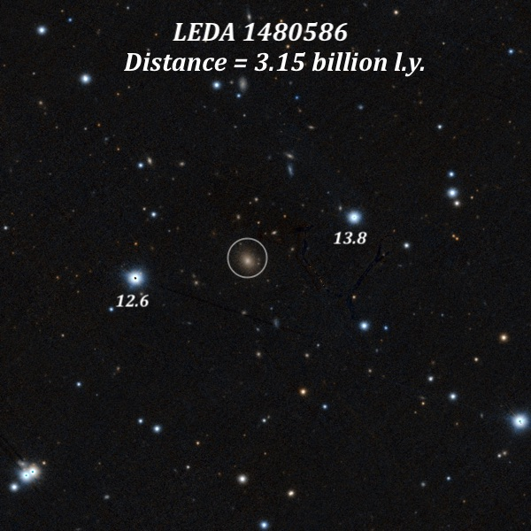
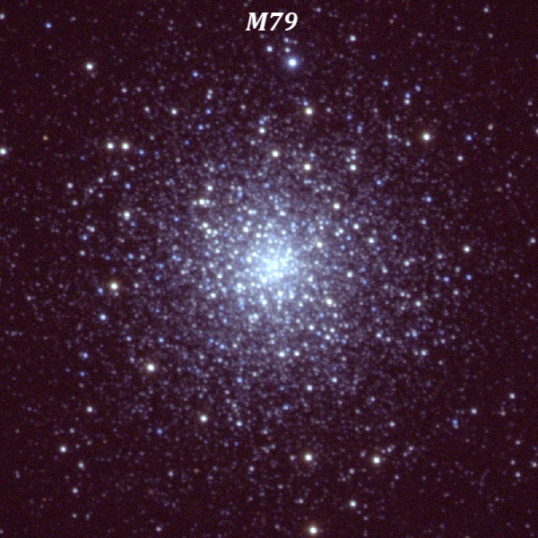
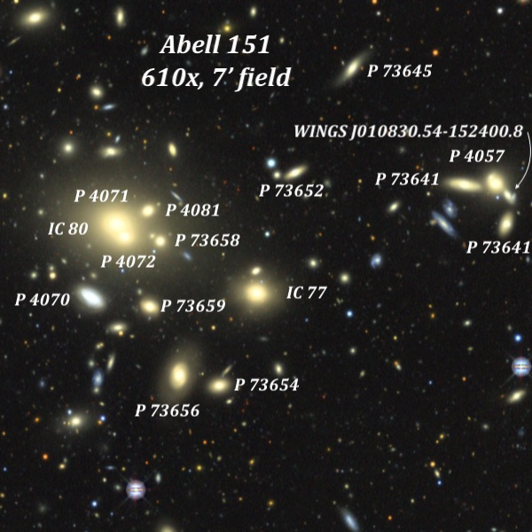
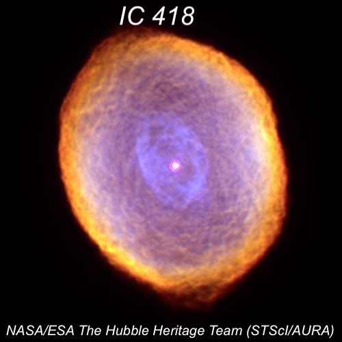
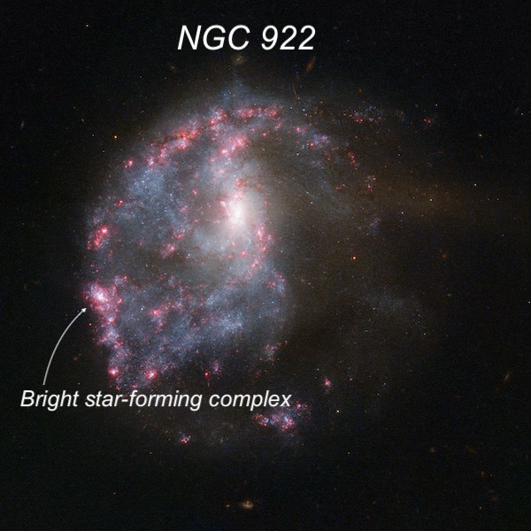

OR: Two nights (Nov. 20/21, 2025) on the Lowrey 48" (Part 1)
I finally gave up hoping for a clear week, and on the day I was planning to fly to Sydney I cancelled my flight and hotel reservations and pivoted towards the east. Instead, I decided to fly a few days later to El Paso, Texas, rent a car, and join Akarsh and Portlander Howard Banich for a visit to Jimi Lowrey and his hilltop observatory, which houses a mind-blowing 48” f/4.0 dob. For a sense of scale, this mini-telescope in front of the 48" is actually a nice-sized 12.5” travelscope designed by Sanath Kumar Sastry, who visited from India when I was there in March. Climbing to the top of the ladder on the 48” is not something for the faint of heart, though at night you can’t see the floor, anyways, so I observe anxiety-free, haha.

Unfortunately, after a stretch of clear weather in west Texas the previous week, it turned sour there also when I arrived on the 18th, and clouds dominated the sky the following day and night also. But on Thursday and Friday nights we had clear skies starting before 8:00 PM. I often travel to Jimi’s with Howard, but he had missed our pilgramage earlier this year in April during the week of the Texas Star Party, so it was lots of fun to have our quartet back together under dark skies. As the weather front had passed during the day on Thursday, conditions weren’t the best that evening. The seeing was “soft”, which meant we had to generally stick with a magnification of 488x. That may sound pretty high, but for this scope that doesn’t come close to maximizing the views for most objects. Our SQM readings were in the 21.50-21.55 range, which is not bad, but not up to a good night when we generally hit 21.6 to 21.8 MPSAS (magnitude per square arc second). On the second night, the seeing had improved and the sky appeared darker, so we were able to easily use 813x for many objects.
Before Thursday night, Akarsh had shared a Google spreadsheet in which we added our personal “want to see” objects. Akarsh had written scripts to populate the spreadsheet with RA, Dec, Object Type, and alternate designations. We all suggested about 20 targets, and the final table included about 70, so we always had a supply to pick from. The wish list varied from bright eye candy like NGC 253 to an absurdly faint extragalactic planetary nebula in the Fornax Dwarf. Often, though, we’re looking at interacting galaxies, structure in brighter galaxies, galaxy groups and clusters, and very distant galaxies. And throw in some jaw-dropping objects like the Orion Nebula and NGC 1365 (probably the best barred spiral in the sky) and you have a great mix of bright and faint. That being said, here are few of the objects that passed through the eypiece.
UGC 2885 = Rubin's Galaxy
03 53 02.4 +35 35 22; Perseus
Ultra-large galaxy
V = 12.8; Size 3.9'x1.9'; Surf Br = 14.9; PA = 40°
Visually, this galaxy is a run-of-the-mill spiral, which was on the “want to see” list of Howard Banich. I logged it as moderately bright, very elongated 3:1 SW-NE, ~2' diameter, fairly sharply concentrated with a relatively bright small core. The disk has a fairly low surface brightness. A very bright mag 10.6 star is very close to the NE end and a 15th mag star is superposed 0.4' NE of center. Here’s the view from Hubble.

Notice the extended spiral arms in the image stretching well beyond the bright Milky Way star. On deep images the arms extend to a diameter of 5.5’. In a 1980 paper, Vera Rubin (read a little about her life here) and colleagues wrote that UGC 2885, with a diameter of ~800 million l.y. was the largest known Sc type galaxy in the “local” universe (defined as about 1 billion light-years). This was based on a Hubble constant of 50 km/s/Mpc, which implied a distance of roughly 118 Mpc (385 million l.y.). Corrected for inclination and galactic extinction, the paper states the diameter is 244 kpc ≈ 800 million l.y, which completely dwarfs the Milky Way! But the current value of the Hubble constant is generally considered closer to 70 km/s/Mpc, which reduces the diameter to “only” 70% of 800 million light-years = 560 million light-years. That still qualifies Rubin’s Galaxy as a monster spiral!
Arp 325 Chain = VV 167
22 06 21.6 -21 04 21; Aquarius
Galaxy Chain
Size 1.5'x0.6'; PA = 160°
There is something fascinating to me about a train of galaxies seemingly linked and flying together through space (of course, they only appear connected in projection). I wrote about a couple of these chains (Shakhbazian 16 and 166) in the April ’25 issue of Sky & Telescope). Another famous one is Burbidge’s Chain next to NGC 247 in Cetus. So I suggested Arp 325, which is a REALLY small chain of 5 galaxies - just 1.5’ in length. That’s not surprising if you consider it’s distance of 785 million light-years. But I am surprised that this group has never been the subject of a dedicated professional study. At 610x, I logged 5 galaxies and only one was tough. I’ve previously viewed this chain with my 24”, and with a lot of effort managed to detect 3 individual members.
{kind=link}

LEDA 1480586
22 51 35.2 +15 17 22; Pegasus
Distant Galaxy
V = 16.0; Size 0.4'x0.3'; PA = 30°
This dim, 16th-magnitude smudge of a galaxy was also my suggestion. With a redshift of z = 0.237, it is possibly the most distant non-quasar-like galaxy that I’ve seen. The redshift translates into a current distance of 3.15 billion light years (called the co-moving distance). What was happening on Earth when the attenuated glow was emitted 3 billion years ago? Life consisted purely of microscopic, single-celled organisms in the ocean!
We actually viewed this galaxy – which is likely the brightest in a cluster – on both nights, using 813x on the second night. It must have grown to its current monstrous size but devouring a number of its neighbors. What made it much easier to identify are two mag 12.6 and 13.8 stars that bracket the galaxy (see image). It wasn’t too difficult to see, but I couldn’t hold it very long before it disappeared and I had to use averted vision to capture it again. The size seemed to vary somewhat, depending on whether I noticed the small, slightly brighter core or the larger core + halo.

M79 = NGC 1904
05 24 10.6 -24 31 27; Lepus
Globular Cluster
V = 7.8; Size 6'
We started the first night observing the globular cluster M30 in Capricorn and nearly ended the second night with a view of the globular cluster M79 in Lepus. The 48 inches of glass makes even non-descript globulars look like showpieces! I’ve previously resolved between three dozen and 50 stars in this small, densely packed globular previously using my old 13.1” and 17.5”. And that’s usually under good seeing conditions. But in the 48”, the brightest stars, which shine at 13th magnitude, looks surprisingly bright and scores of fainter stars make an appearance. What struck me most were several lines and arcs of stars — you can see them in this image. Here’s what I logged at only 375x (higher power would have undoubtedly resolved it better).
“Fantastic view of this relatively small, dense globular cluster. It contains a brilliant 30" nucleus that is noticeably elongated and highly mottled. Numerous densely packed stars within the nucleus would temporarily appear and disappear with the seeing. The irregular halo was highly resolved, many in long chains and arcs. A very distinctive arc of ~7 brighter stars is in the outer halo from the S to E quadrant and extending further to the NE. A nice linear chain of stars is on the NW side, extending in a NE-SW alignment. In total, I would estimate that 125 to 150 stars were resolved.

Abell 151 = AGC 151
01 08 52.3 -15 25 01; Cetus
Galaxy Cluster
Size 72'
Abell 151 is a rich galaxy cluster at a distance of 700 million light-years. Two of the members, IC 77 and IC 80, were discovered visually in 1892 by French astronomer Stephane Javelle using a 30” f/23 refractor at an observatory in southern France. All of its other members, though, were discovered photographically. We observed the cluster at 610x using an 8mm eyepiece, which gave a 7’ actual field. That’s not a very large chunk of celestial real estate, yet within that 7’ I logged all the galaxies labeled on this finder chart. The brightest galaxy – IC 80 on the left side – resolved into a 10” pair of fairly bright glows with stellar nuclei and they shared a common halo. Surrounding this tight pair was a swarm of fainter members. This was one of the highlights of the night.

IC 418 = Spirograph Nebula
05 27 28.2 -12 41 50; Lepus
V = 9.0; Size 14"x11"
This unusual planetary was the second to last object we viewed on Friday night (the last was NGC 1535, sometimes called “Cleopatra’s Eye”). It was discovered in 1891 by Harvard Observatory astronomer Mina Fleming (though paid as a working grunt) on an objective-spectrum plate taken in Peru. She described the H-beta line as "unusually large as compared with the line whose wavelength is 5007 [OIII], the visual spectrum differs strikingly from that of other planetary nebulae.” So what does that suggest for amateurs? Because the H-beta (and H-alpha) line is strong, it doesn’t help to use an OIII or UHC-type filter. Instead, try a H-beta filter and just go filterless! Also, this is one of the very few planetaries that show a red or raspberry color around the periphery in an 18” telescope.
W.W. Campbell of Lick Observatory made the first visual observation the same year (1891). He described it as "a beautiful object as seen in the 36-inch telescope [refractor], consisting of a 9th magnitude star surrounded by a circular disc of blue light nearly 15" in diameter.” I’m surprised, though, he didn’t call it annular as I definitely see a ring in my 24” scope.
In the 48”, IC 418 has a very high surface brightness and an unusually bright central star. And it was clearly annular. The ring’s outer rim has a definite raspberry color, while the inner part of the annulus looked more bluish to me. Surrounding the ring is a faint outer halo. I didn’t see any sign of the “Spirograph” pattern, and the colors on this HST image doesn't match what’s seen in the eyepiece. The central purple ellipse is the darker center visually, while the bright orange-red rim appears as a much deeper raspberry color.

NGC 922
02 25 04.7 -24 47 17; Fornax
V = 12.1; Size 1.9'x1.6'; Surf Br = 13.2
NGC 922 has been described as “drop-through ring galaxy” or “collisional ring galaxy”, and more recently, as a “tidal ring galaxy”. A ring galaxy is thought to form in a "bullseye" collision, when a smaller galaxy passes directly through the center of a larger spiral, colliding nearly head-on. The impact sends shockwaves through the spiral's disk creating density waves that expand outward and trigger intense star formation in a ring. A classic example is the Cartwheel Galaxy in Sculptor. In the case of NGC 922, the ring is strongest on the east side, creating a C-shaped morphology (which is what I saw in the eyepiece!). A proposed scenario using numerical simulations is that a high-speed off-axis drop-through collision occurred about 300 million years ago, with a small galaxy passing through a larger disc system. The small intruder was a hit and run — and is now found 8’ WNW of NGC 922. The HST image shows that the ring is bursting with new star formation with 70% of the clusters in the galaxy younger than 7 million years (young by open cluster standards).
At 488x, the galaxy displayed a very peculiar shape in the eyepiece. A bright, very elongated "bar" extended SW-NE with a very bright small nucleus. From the NE end a narrow, mottled, circular arc (part of the collisional ring) curved counter-clockwise, passing through a fairly bright, very small knot (labeled on the HST image) on the SSE side with a stellar center. This knot is the brightest and youngest star-forming complex in the galaxy. A diffuse glow filled the space between the arc and the bright "bar", which is offset on images to the NE side of the ring. The westerh half of the galaxy and ring was barely seen.

(to be continued)